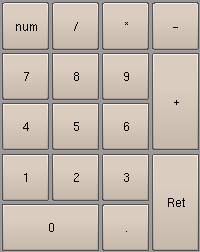
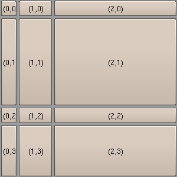
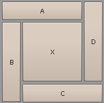

| Home | Trees | Index | Help |
|---|
| Module gui :: Class Grid |
|
object--+ |Container--+ | Grid
Grid geometry manager.
This manager places widgets at grid of rectangular cells, widget can span multiple adjacent cells. One cell may be occupied by one widget.
Example 1 (numeric keyboard):
# file: ex_Grid1.py
import Blender
import gui
interface = gui.Interface()
grid = gui.Grid(interface, 10, 10, 200, 250, 4, 5, padx=4, pady=4)
grid.add( gui.Button(interface, 'num'), 0, 0)
grid.add( gui.Button(interface, '/'), 1, 0)
grid.add( gui.Button(interface, '*'), 2, 0)
grid.add( gui.Button(interface, '-'), 3, 0)
grid.add( gui.Button(interface, '7'), 0, 1)
grid.add( gui.Button(interface, '8'), 1, 1)
grid.add( gui.Button(interface, '9'), 2, 1)
grid.add( gui.Button(interface, '+'), 3, 1, rowspan=2)
grid.add( gui.Button(interface, '4'), 0, 2)
grid.add( gui.Button(interface, '5'), 1, 2)
grid.add( gui.Button(interface, '6'), 2, 2)
grid.add( gui.Button(interface, '1'), 0, 3)
grid.add( gui.Button(interface, '2'), 1, 3)
grid.add( gui.Button(interface, '3'), 2, 3)
grid.add( gui.Button(interface, 'Ret'), 3, 3, rowspan=2)
grid.add( gui.Button(interface, '0'), 0, 4, colspan=2)
grid.add( gui.Button(interface, '.'), 2, 4)
interface.register_container(grid)
interface.run()
# eof

Example 2:
# file: ex_Grid2.py
import Blender
import gui
interface = gui.Interface()
grid = gui.Grid(interface, 10, 10, 300, 300, [0.1, 0.2, '*'], [0.1,'*',0.1,0.3])
for row in xrange(4):
for col in xrange(3):
grid.add( gui.Button(interface, "(%d,%d)" % (col,row) ), col, row)
interface.register_container(grid)
interface.run()
# eof

Example 3:
# file: ex_Grid3.py
import Blender
import gui
interface = gui.Interface()
grid = gui.Grid(interface, 10, 10, 200, 200, [0.2,'*',0.2], [0.2,'*',0.2])
grid.add( gui.Button(interface, 'A'), 0, 0, colspan=2)
grid.add( gui.Button(interface, 'B'), 0, 1, rowspan=2)
grid.add( gui.Button(interface, 'C'), 1, 2, colspan=2)
grid.add( gui.Button(interface, 'D'), 2, 0, rowspan=2)
grid.add( gui.Button(interface, 'X'), 1, 1)
interface.register_container(grid)
interface.run()
# eof

| Method Summary | |
|---|---|
Define layout of grid. | |
Place widget on the grid. | |
Draw container and it's content (if container is visible). | |
Set new dimensions and position of container. | |
| Inherited from Container | |
Returns container's geometry. | |
Show/hide container and it's children. | |
Returns visibility of container. | |
| Inherited from object | |
x.__delattr__('name') <==> del x.name | |
x.__getattribute__('name') <==> x.name | |
x.__hash__() <==> hash(x) | |
T.__new__(S, ...) -> a new object with type S, a subtype of T | |
helper for pickle | |
helper for pickle | |
x.__repr__() <==> repr(x) | |
x.__setattr__('name', value) <==> x.name = value | |
x.__str__() <==> str(x) | |
| Method Details |
|---|
__init__(self,
interface,
left,
bottom,
width,
height,
cols,
rows,
padx=5,
pady=5)
Define layout of grid.
|
add(self, widget, col, row, colspan=1, rowspan=1)Placewidget on the grid.
|
draw(self)Draw container and it's content (if container is visible).
|
set_geometry(self, left, bottom, width, height)Set new dimensions and position of container. If certain argument isNone then container parameter remains unchanged:
c = gui.Container(interface, 10, 10, 300, 300)
# set new position
c.set_geometry(x,y, None, None)
# change width
c.set_geometry(None, None, new_width, None)
Function returns four booleans, where True value means that
parameter has changed:
c = gui.Container(interface, 10, 10, 300, 300)
left,bottom,width,height = c.get_geometry()
# change bottom and width
diff = c.set_geometry(left, bottom+5, width-1, height)
print diff # -> (False, True, True, False)
Subclasses must keep behaviour of this method, so it is a
good practice to call Container.set_geometry at the
begining of overriding method:
class Other(Container):
# ...
def set_geometry(self, left, bottom, width, height):
diff = Container.set_geometry(self, left, bottom, width, height)
if diff[3]: # width has changed:
# recalculate width of children
return diff
|
| Home | Trees | Index | Help |
|---|
| Generated by Epydoc 2.1 on Mon Jul 18 19:50:45 2005 | http://epydoc.sf.net |